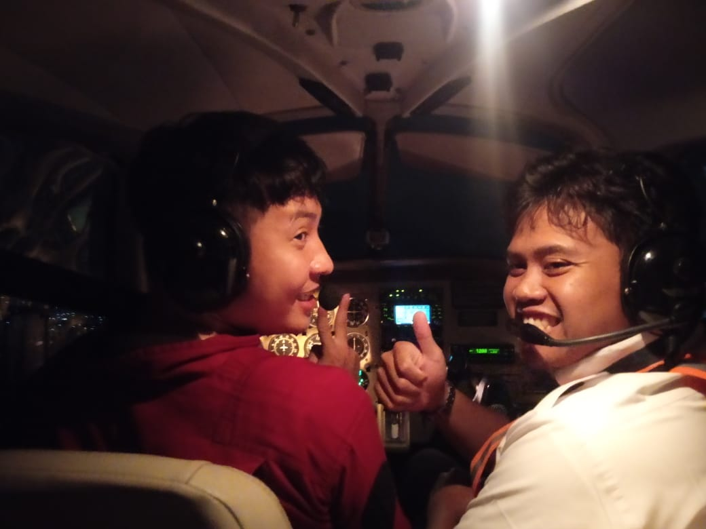

Hi , I'm Ary. I'm a remote frontend developer, that have so much kind of idea to build an aesthetic and comfort website. As a remote frontend developer, I specialize in optimizing the visual and interactive elements of websites from a distance. My role involves using technologies like HTML, CSS, and JS to design and implement user interfaces that are both functional and aesthetically pleasing. Working remotely allows me to collaborate with clients and teams through different time zones and locations, leveraging digital tools to ensure seamless communication and project management.
In my previous role as a flight instructor, I was responsible for training and guiding aspiring pilots through the complexities of aviation. My duties included delivering comprehensive ground school instruction, conducting in-flight training sessions, and ensuring that students developed both the technical skills and confidence needed for safe and effective flying. Nowdays i let aviation away and make it just hobby to focus in remote frontend developer
